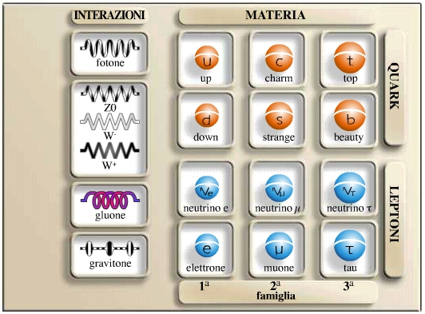

|  | LE INTERAZIONI FONDAMENTALI |
|
A partire dalla fine del XIX secolo, in paricolare con James Clerk Maxwell, il quale nel 1873 capì che due forze apparentemente differenti (in particolare quella elettrica e quella magnetica) erano in realtà la manifestazione di un’unica interazione fondamentale; alcuni fisici, cominciano a ipotizzare e proporre insiemi di leggi e teorie che possano collegare tutti i fenomeni naturali. In particolare, a livello microscopico, si possono ricondurre tutti i fenomeni molecolari, atomici e subatomici, a 4 interazioni fondamentali: gravitazionale, nucleare forte, nucleare debole e elettromagnetica (spesso queste ultime due vengono considerate come una unica: elettrodebole). I 4 tipi di interazioni, vengono descritti secondo i modelli delle teorie della relatività e locale, basate su principi di simmetria locali e di gauge, ovvero simmetrie che ruotano secondo angoli differenti da punto a punto dello spazio-tempo. L’insieme delle quattro interazioni , descritto da tali teorie, costituisce il Modello Standard (MS) |